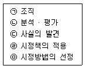
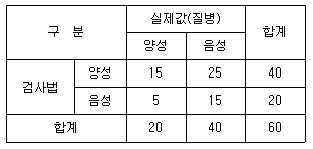
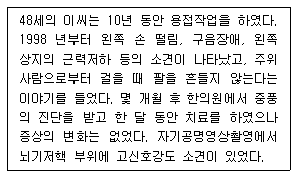

산업위생관리기사 (2016-08-21 기출문제)
1과목: 산업위생학개론
1. 1994년에 ACGIH와 AIHA 등에서 제정하여 공포한 산업위생 전문가의 윤리강령에서 사업주에 대한 책임에 해당되지 않는 내용은 무엇인가?
- 결과와 결론을 위해 사용된 모든 자료들을 정확히 기록·유지하여 보관한다.
- 전문가의 의견은 적절한 지식과 명확한 정의에 기초를 두고 있어야 한다.
- 신뢰를 중요시하고, 정직하게 충고하며, 결과와 권고사항을 정확히 보고한다.
- 쾌적한 작업환경을 달성하기 위해 산업위생 원리들을 적용할 때 책임감을 갖고 행동한다.
(정답률: 57%)

2. 산업안전보건법의 ‘사무실 공기관리 지침’에서 정하는 근로자 1 인당 사무실의 환기기준으로 적절한 것은?
- 최소 외기량 : 0.57m3/hr, 환기횟수 : 시간당 2회 이상
- 최소 외기량 : 0.57m3/hr, 환기횟수 : 시간당 4회 이상
- 최소 외기량 : 0.57m3/min, 횟수 : 시간당 2회 이상
- 최소 외기량 : 0.57m3/min, 환기횟수 : 시간당 4회 이상
(정답률: 52%)
3. 인간공학적인 의자 설계의 원칙과 거리가 먼 것은?
- 의자의 안전성
- 체중의 분포 설계
- 의자 좌판의 높이
- 의자 좌판의 깊이와 폭
(정답률: 70%)
4. 화학물질 및 물리적인자의 노출기준에 있어 2종 이상의 화학물질이 공기 중에 혼재하는 경우, 유해성이 인체의 서로 다른 조직에 영향을 미치는 근거가 없는 한, 유해물질들간의 상호작용은 어떤 것으로 간주하는가?
- 상승작용
- 강화작용
- 상가작용
- 길항작용
(정답률: 65%)
5. 600명의 근로자가 근무하는 공장에서 1년에 30건의 재해가 발생하였다. 이 가운데 근로자들이 질병, 기타의 사유로 인하여 총근로시간 중 3%를 결근하였다면 이 공장의 도수율은 얼마인가? (단, 근무는 1주일에 40시간, 연간 50주를 근무한다.)
- 25.77
- 48.50
- 49.55
- 50.00
(정답률: 78%)
6. 산업피로의 증상과 가장 거리가 먼 것은?
- 혈액 및 소변의 소견
- 자각증상 및 타각증상
- 신경기능 및 체온의 변화
- 순환기능 및 호흡기능의 변화
(정답률: 59%)
7. 작업관련 근골격계 장애(Work-related Musculoskeletal Disorders, WMSDs)가 문제로 인식되는 이유 중 가장 적절치 못한 것은?
- WMSDs는 다양한 작업장과 다양한 직무활동에서 발생한다.
- WMSDs는 생산성을 저하시켜 제품과 서비스의 질을 저하시킨다.
- WMSDs는 거의 모든 산업 분야에서 예방하기 어려운 상해 내지는 질환이다.
- WMSDs는 특히 허리가 포함되었을 때 가장 비용이 많이 소요되는 직업성 질환이다.
(정답률: 73%)
8. 근로자 건강진단실시 결과 건강관리구분에 따른 내용의 연결이 틀린 것은?
- R : 건강관리상 사후관리가 필요 없는 근로자
- C1 : 직업성 질병으로 진전될 우려가 있어 추적검사 등 관찰이 필요한 근로자
- D1 :직업성 질병의 소견을 보여 사후관리가 필요한 근로자
- D2 : 일반 질병의 소견을 보여 사후관리가 필요한 근로자
(정답률: 73%)
9. 화학적 원인에 의한 직업성 질환으로 볼 수 없는 것은?
- 수전증
- 치아산식증
- 정맥류
- 시신경장해
(정답률: 76%)
10. 교대제에 대한 설명이 잘못된 것은?
- 산업보건면이나 관리면에서 가장 문제가 되는 것은 3교대제이다.
- 교대근무자와 주간근무자에 있어서 재해 발생율은 거의 비슷한 수준으로 발생한다.
- 석유정제, 화학공업 등 생산과정이 주야로 연속되지 않으면 안되는 산업에서 교대제를 채택하고 있다.
- 젊은층의 교대근무자에게 있어서는 체중의 감소가 뚜렷하고 회복은 빠른 반면, 중년층에서는 체중의 변화가 적고 회복은 늦다.
(정답률: 74%)
11. 직업성 변이(Occupational stigmata)의 정의로 맞는 것은?
- 직업에 따라 체온량의 변화가 일어나는 것이다.
- 직업에 따라 체지방량의 변화가 일어나는 것이다.
- 직업에 따라 신체 활동량의 변화가 일어나는 것이다.
- 직업에 따라 신체 형태와 기능에 국소적 변화가 일어나는 것이다.
(정답률: 86%)
12. 다음은 사고예방대책의 기본 원리 5단계의 내용이다. 순서대로 나열한 것은?

- ㉢→㉡→㉠→㉤→㉣
- ㉢→㉤→㉡→㉠→㉣
- ㉠→㉡→㉢→㉤→㉣
- ㉠→㉢→㉡→㉤→㉣
(정답률: 83%)
13. 아연과 황의 유해성을 주장하고 먼지 방지용마스크로 동물의 방광을 사용토록 주장한이는?
- Pliny
- Ramazzini
- Galen
- Paracelsus
(정답률: 68%)
14. 산업안전보건법상 보건관리자의 자격과 선임제도에 관한 설명으로 틀린 것은?
- 상시 근로자 50인 이상 사업장은 보건관리자의 자격기준에 해당하는 자 중 1인 이상을 보건관리자로 선임하여야 한다.
- 보건관리대행은 보건관리자의 직무를 보건관리를 전문으로 행하는 외부기관에 위탁하여 수행하는 제도로 1990년부터 법적근거를 갖고 시행되고 있다.
- 작업환경상에 유해요인이 상존하는 제조업은 근로자의 수가 2000명을 초과하는 경우에 의사인 보건관리자 1인을 포함하는 3인의 보건관리자를 선임하여야 한다.
- 보건관리자 자격기준은 의료법에 의한 의사 또는 간호사, 산업안전보건법에 의한 산업위생지도사, 국가기술자격법에 의한 산업위생관리산업기사 또는 환경관리산업기사(대기분야에 한함) 이상이다.
(정답률: 69%)
15. 산업위생의 정의에 있어 4가지 주요 활동에 해당하지 않는 것은?
- 관리(control)
- 평가(evaluation)
- 인지(recognition)
- 보상(compensation)
(정답률: 84%)
16. MPWC가 17.5kcal/min인 사람이 1일 8시간 동안 물건 운반 작업을 하고 있다. 이때 작업대사량(에너지소비량)이 8.75kcal/min 이고 휴실할 때 평균대사량이 1.7kcal/min 이라면, 지속작업의 허용시간은 약 몇 분인가? (단, 작업에 따른 두 가지 상수는 3.720, 0.1949를 적용한다.)
- 88분
- 103분
- 319분
- 383분
(정답률: 62%)
17. 우리나라 고용노동부에서 지정한 특별관리 물질에 해당하지 않는 것은?
- 페놀
- 클로로포름
- 황산
- 트리클로로에틸렌
(정답률: 49%)
18. 혐기성 대사에 사용되는 에너지원이 아닌 것은?
- 포도당
- 크레아틴 인산
- 단백질
- 아데노신 삼인산
(정답률: 78%)
19. 산업 스트레스 발생요인으로 집단 간의 갈등이 너무 낮은 경우 집단 간의 갈등을 기능적인 수준까지 자극하는 갈등촉진기법에 해당되지 않는 것은?
- 자원의 확대
- 경쟁의 자극
- 조직구조의 변경
- 커뮤니케이션의 증대
(정답률: 75%)
20. 다아세톤(TLV = 500ppm) 200ppm과 톨루엔 (TLV = 50ppm) 35ppm이 각각 노출되어 있는 실내 작업장에서 노출기준의 초과 여부를 평가한 결과로 맞는 것은? (단, 두 물질 간에 유해성이 인체의 서로 다른 부위에 작용한다는 증거가 없는 것으로 간주한다.)
- 노출지수가 약 0.72이므로 노출기준 미만이다.
- 노출지수가 약 0.72이므로 노출기준을 초과하였다.
- 노출지수가 약 1.1이므로 노출기준 미만이다.
- 노출지수가 약 1.1이므로 노출기준을 초과하였다.
(정답률: 80%)
2과목: 작업위생측정 및 평가
21. 작업장 공기 중 벤젠증기를 활성탄관 흡착제로 채취할 때 작업장 공기 중 페놀이 함께 다량 존재하면 벤젠증기를 효율적으로 채취할 수 없게 되는 이유로 가장 적합한 것은?
- 벤젠과 흡착제와의 결합자리를 페놀이 우선적으로 차지하기 때문
- 실리카겔 흡착제가 벤젠과 페놀이 반응할 수 있는 장소로 이용되어 부산물을 생성하기 때문
- 페놀이 실리카겔과 벤젠의 결합을 증가시키는 다리역할을 하여 분석 시 벤젠의 탈착을 어렵게 하기 때문
- 벤젠과 페놀이 공기내에서 서로 반응을 하여 벤젠의 일부가 손실되기 때문
(정답률: 59%)
22. 원자가 가장 낮은 에너지 상태인 바닥에서 에너지를 흡수하면 들뜬 상태가 되고 들뜬 상태의 원자들이 낮은 에너지상태로 돌아올 때 에너지를 방출하게 된다. 금속마다 고유한 방출스펙트럼을 갖고 있으며 이를 측정하여 중금속을 분석하는 장비는?
- 불꽃 원자흡광광도계
- 비불꽃 원자흡광광도계
- 이온크로마토그래피
- 유도결합플라즈마분광광도계
(정답률: 64%)
23. 캐스케이드 임팩터(Cascade Impactor)에 의하여 에어로졸을 포집할 때 관여하는 충돌이론에 대한 설명이 잘못된 것은?
- 충돌이론에 의하여 차단점 직경(cutpoint diameter)을 예측할 수 있다.
- 충돌이론에 의하여 포집효율 곡선의 모양을 예측할 수 있다.
- 충돌이론은 스토크스 수(stokes number)와 관계 되어 있다.
- 레이놀즈 수(Reynolds Number)가 200을 초과하게 되면 충돌이론에 미치는 영향은 매우 크게 된다.
(정답률: 68%)
24. 레이저광의 폭로량을 평가하는 사항에 해당하지 않는 항목은?
- 각막 표면에서의 조사량(J/cm2) 또는 폭로량을 측정한다.
- 조사량의 서한도는 1mm 구경에 대한 평균치이다.
- 레이저광과 같은 직사광과 형광등 또는 백열등과 같은 확산광은 구별하여 사용해야 한다.
- 레이저광에 대한 눈의 허용량은 폭로 시간에 따라 수정되어야 한다.
(정답률: 55%)
25. 저온의 작업환경 공기온도를 측정하려고 한다. 영하 20℃까지 측정할 수 있는 온도계로 측정하려고 할 때 측정시간으로 가장 적합한 것은?
- 30초 이상
- 1분 이상
- 3분 이상
- 5분 이상
(정답률: 49%)
26. 1회 분석의 우연오차의 표준편차를 σ라 하였을 때 n회의 평균치의 표준편차는?
- σ/n
- σ√n
- √n/σ
- σ/√n
(정답률: 58%)
27. 그라인딩 작업 시 발생되는 먼지를 개인 시료 포집기를 사용하여 유리섬유여과지로 포집하였다. 이 때의 먼지농도(mg/m3)는? (단, 포집 전 유속은 1.5L/min, 여과지 무게는 0.436mg, 4시간의 포집하는 동안 유속 1.3L/min, 여과지의 무게는 0.948mg)
- 약 1.5
- 약 2.3
- 약 3.1
- 약 4.3
(정답률: 47%)
28. 유체가 위쪽으로 흐름에 따라 float도 위로 올라가며 float와 관벽사이의 접촉면에서 발생되는 압력강하가 float를 충분히 지지해줄 때까지 올라간 float의 눈금을 읽어 측정하는 장비는?
- 오리피스미터(orifice meter)
- 벤츄리미터(venturi meter)
- 로타미터(rotameter)
- 유출노즐(flow nozzles)
(정답률: 69%)
29. 고열 측정시간에 관한 기준으로 옳지 않은 것은? (단, 고시 기준)
- 흑구 습 습구흑구온도 측정시간 : 직경이 15센티미터일 경우 25분 이상
- 흑구 및 습구흑구온도 측정시간 : 직경이 7.5센티미터 또는 5센터미터일 경우 5분 이상
- 습구온도 측정 시간 : 아스만통풍건습계 25분 이상
- 습구온도 측정시간 : 자연습구온도계 15분 이상
(정답률: 62%)
30. 유량, 측정시간, 회수율 및 분석에 의한 오차가 각각 18%, 3%, 9%, 5% 일 때 누적오차는?
- 약 18%
- 약 21%
- 약 24%
- 약 29%
(정답률: 76%)
31. 음압레벨이 1⑤dB(A)인 연속소음에 대한 근로자 폭로 노출시간(시간/일) 허용기준은? (단, 우리나라 고용노동부의 허용기준)
- 0.5
- 1
- 2
- 4
(정답률: 72%)
32. 누적소음노출량 측정기로 소음을 측정하는 경우, 기기 설정으로 적절한 것은? (단, 고시 기준)
- Criteria = 80dB, Exchange Rate = 5dB, Threshold = 90dB
- Criteria = 80dB, Exchange Rate = 10dB, Threshold = 90dB
- Criteria = 90dB, Exchange Rate = 5dB, Threshold = 80dB
- Criteria = 90dB, Exchange Rate = 10dB, Threshold = 80dB
(정답률: 83%)
33. 작업장에서 오염물질 농도를 측정하였더니 그 중 일산화탄소(CO)가 0.01%이였다. 이 때 일산화탄소 농도(mg/m3)는 약 얼마인가? (단, 25℃, 1기압 기준)
- 95
- 1⑤
- 115
- 125
(정답률: 59%)
34. 어느 작업장 근로자가 400ppm의 acetone(TLV = 1000ppm)과 50ppm의 secbutyl acetone(TLV = 200ppm)와 2-butanone(TLV = 200ppm)에 폭로되었다. 이 근로자가 허용치 이하로 폭로되기 위해서는 2-butanone에 몇 ppm이하에 폭로되어야 하는가? (단, 상가작용하는 것으로 가정함)
- 70ppm
- 82ppm
- 114ppm
- 122ppm
(정답률: 62%)
35. 근로자가 일정시간 동안 일정농도의 유해물질에 노출될 때 체내에 흡수되는 유해물질의 양은 다음 식으로 구한다. 인자의 설명이 잘못된 것은? (단, 체내 흡수량(mg) = C × T × V × R)
- C : 공기 중 유해물질농도
- T : 노출시간
- V : 작업공간 내의 공기기적
- R : 체내 잔류율
(정답률: 72%)
36. 입경범위가 0.1~0.5µm인 입자성 물질이 여과지에 포집될 경우에 관여하는 주된 메커니즘은?
- 충돌과 간섭
- 확산과 간섭
- 확산과 충돌
- 충돌
(정답률: 76%)
37. 소음진동공정시험기준에 따른 환경기준 중 소음측정방법으로 옳지 않은 것은?
- 소음계의 동특성은 원칙적으로 빠름(fast) 모드로 하여 측정하여야 한다.
- 소음계와 소음도기록기를 연결하여 측정·기록하는 것을 원칙으로 한다.
- 소음계 및 소음도기록기의 전언과 기기의 동작을 점검하고 매회 교정을 실시하여야 한다.
- 소음계의 청감보정회로는 C특성에 고정하여 측정하여야 한다.
(정답률: 57%)
38. 유해인자에 대한 노출평가방법인 위해도평가(Risk assessment)를 설명한 것으로 가장 거리가 먼 것은?
- 위험이 가장 큰 유해인자를 결정하는 것이다.
- 유해인자가 본래 가지고 있는 위해성과 노출요인에 의해 결정된다.
- 모든 유해인자 및 작업자, 공정을 대상으로 동일한 비중을 두면서 관리하기 위한 방안이다.
- 노출도 많고 건강상의 영향이 큰 인자인 경우 위해도가 크고 관리해야 할 우선순위가 높게 된다.
(정답률: 65%)
39. 산업보건분야에서는 입자상 물질의 크기를 표시하는데 주로 공기역학적(유체역학적) 직경을 사용한다. 공기역학적 직경에 관한 설명으로 옳은 것은?
- 대상먼지와 침강속도가 같고 밀도가 0.1이며 구형인 먼지의 직경으로 확산
- 대상먼지와 침강속도가 같고 밀도가 1이며 구형인 먼지의 직경으로 확산
- 대상먼지와 침강속도가 다르고 밀도가 0.1이며 구형인 먼지의 직경으로 확산
- 대상먼지와 침강속도가 다르고 밀도가 1이며 구형인 먼지의 직경으로 확산
(정답률: 65%)
40. 산업보건분야에서 스토크스의 법칙에 따른 침강속도를 구하는 식을 대신하여 간편하게 계산하는 식으로 적절한 것은? (단, V : 종단속도(cm/sec), SG : 입자의 비중, d : 입자의 직경(µm), 입자크기는 1~50µm)
- V = 0.001 × SG × d2
- V = 0.003 × SG × d2
- V = 0.0⑤ × SG × d2
- V = 0.009 × SG × d2
(정답률: 83%)
3과목: 작업환경관리대책
41. 주물사, 고온가스를 취급하는 공정에 환기시설을 설치하고자 할 때, 덕트의 재료로 가장 적당한 것은?
- 아연도금 강판
- 중질 콘크리트
- 스테인레스 강판
- 흑피 강판
(정답률: 73%)
42. 작업환경개선 대책 중 대치의 방법을 열거한 것이다. 공정변경의 대책으로 가장 거리가 먼 것은?
- 금속을 두드려서 자르는 대신 톱으로 자름
- 흄 배출용 드래프트 창 대신에 안전유리로 교체함
- 작은 날개로 고속 회전시키는 송풍기를 큰 날개로 저속 회전시킴
- 자동차 산업에서 땜질한 납 연마시 고속회전 그라인더의 사용을 저속 Oscillating - typesander로 변경함
(정답률: 52%)
43. 주물작업 시 발생되는 유해인자로 가장 거리가 먼 것은?
- 소음 발생
- 금속흄 발생
- 분진 발생
- 자외선 발생
(정답률: 69%)
44. 귀덮개의 사용 환경으로 가장 옳은 것은?
- 장시간 사용 시
- 간헐적 소음 노출 시
- 덥고 습한 환경에서 작업 시
- 다른 보호구와 동시 사용 시
(정답률: 69%)
45. 후드의 유입계수가 0.7이고 속도압이 20mmH2O일 때 후드의 유입손실(mmH2O)은?
- 약 10.5
- 약 20.8
- 약 32.5
- 약 40.8
(정답률: 68%)
46. 전체환기를 적용하기 부적절한 경우는?
- 오염발생원이 근로자가 근무하는 장소와 근접되어있는 경우
- 소량의 오염물질이 일정한 시간과 속도로 사업장으로 배출되는 경우
- 오염물질의 독성이 낮은 경우
- 동일사업장에 다수의 오염발생원이 분산되어 있는 경우
(정답률: 68%)
47. 공기 중의 사염화탄소 농도가 0.3% 라면 정화통의 사용 가능 시간은? (단, 사염화탄소 0.5%에서 100분간 사용 가능한 정화통 기준)
- 166분
- 181분
- 218분
- 235분
(정답률: 68%)
48. 유해성 유기용매 A가 7m×14m×4m의 체적을 가진 방에 저장되어 있다. 공기를 공급하기 전에 측정한 농도는 400ppm이었다. 이 방으로 60m3/min의 공기를 공급한 후 노출기준인 100ppm으로 달성되는 데 걸리는 시간은? (단, 유해성 유기용매 증발 중단, 공급공기의 유해성 유기용매 농도는 0, 희석만 고려)
- 약 3분
- 약 5분
- 약 7분
- 약 9분
(정답률: 56%)
49. 어떤 송풍기가 송풍기 유효전압 100mmH2O이고 풍량은 16m3/min의 성능을 발휘한다. 전압효율이 80% 일 때 축동력(kW)은?
- 약 0.13
- 약 0.26
- 약 0.33
- 약 0.57
(정답률: 73%)
50. 송풍기에 관한 설명으로 옳은 것은?
- 풍량은 송풍기의 회전수에 비례한다.
- 동력은 송풍기의 회전수의 제곱에 비례한다.
- 풍력은 송풍기의 회전수의 세제곱에 비례한다.
- 풍압은 송풍기의 회전수의 세제곱에 비례한다.
(정답률: 65%)
51. 용접흄을 포집 제거하기 위해 작업대에 측방 외부식 테이블상 장방형 후드를 설치하고자 한다. 개구면에서 포착점까지의 거리는 0.7m, 제어속도가 0.30m/s, 개구면적이 0.7m2일 때 필요 송풍량(m3m/min)은? (단, 작업대에 붙여 설치하며 플랜지 미부착)
- 35.3
- 47.8
- 56.7
- 68.5
(정답률: 52%)
52. 작업장에서 Methyl alcohol(비중 = 0.792, 분자량 = 32.04, 허용농도 = 200ppm)을 시간당 2리터 사용하고 안전계수가 6, 실내온도가 20℃일 때 필요환기량(m3/min)은 약 얼마인가?
- 400
- 600
- 800
- 1000
(정답률: 60%)
53. 전기집진장치의 장단점으로 틀린 것은?
- 운전 및 유지비가 많이 든다.
- 설치 공간이 많이 든다.
- 압력손실이 낮다.
- 고온 가스처리가 가능하다.
(정답률: 63%)
54. 입자의 침강속도에 대한 설명으로 틀린 것은? (단, stoke's 법칙 기준)
- 입자직경의 제곱에 비례한다.
- 입자의 밀도차에 반비례한다.
- 중력가속도에 비례한다.
- 공기의 점성계수에 반비례한다.
(정답률: 71%)
55. 정상류가 흐르고 있는 유체 유동에 관한 연속방정식을 설명하는데 적용된 법칙은?
- 관성의 법칙
- 운동량의 법칙
- 질량보존의 법칙
- 점성의 법칙
(정답률: 64%)
56. 관성력 제진장치에 관한 설명으로 틀린 것은?
- 충돌 전의 처리가스 속도를 적당히 빠르게 하면 미세입자를 포집할 수 있다.
- 처리 후의 출구가스 속도가 느릴수록 미세입자를 포집할 수 있다.
- 기류의 방향전환각도가 작을수록 압력손실이 적어져 제진효율이 높아진다.
- 기류의 방향전환 회수가 많을수록 압력손실은 증가한다.
(정답률: 44%)
57. 적용화학물질이 밀랍, 탈수라노린, 파라핀, 유동파라핀, 탄산마그네슘이며 적용용도로는 광산류, 유기산, 염류 및 무기염류 취급작업인 보호크림의 종류로 가장 알맞은 것은?
- 친수성크림
- 차광크림
- 소수성크림
- 피막형 크림
(정답률: 48%)
58. 국소환기장치 설계에서 제어풍속에 대한 설명으로 가장 알맞은 것은?
- 작업장내의 평균유속을 말한다.
- 발산되는 유해물질을 후드로 완전히 흡인하는데 필요한 기류속도이다.
- 덕트내의 기류속도를 말한다.
- 일명 반송속도라고도 한다.
(정답률: 67%)
59. 방독마스크를 효과적으로 사용할 수 있는 작업으로 가장 적절한 것은?
- 맨홀 작업
- 오래 방치된 우물 속의 작업
- 오래 방치된 정화조 내 작업
- 지상의 유해물질 중독 위험작업
(정답률: 81%)
60. 희석환기를 적용하기에 가장 부적당한 화학물질은?
- Acetone
- Xylene
- Toluene
- Ethylene Oxide
(정답률: 54%)
4과목: 물리적유해인자관리
61. 자외선으로부터 눈을 보호하기 위한 차광보호구를 선정하고자 하는데 차광도가 큰 것이 없어 두 개를 겹쳐서 사용하였다. 각각의 차광도가 6과 3이었다면 두 개를 겹쳐서 사용한 경우의 차광도는 얼마인가?
- 6
- 8
- 9
- 18
(정답률: 55%)
62. 진동에 의한 생체영향과 가장 거리가 먼 것은?
- C5 dip 현상
- Raynaud 현상
- 내분비계 장해
- 뼈 및 관절의 장해
(정답률: 76%)
63. 감압병의 예방 및 치료의 방법으로 적절하지 않은 것은?
- 잠수 및 감압방법은 특별히 잠수에 익숙한 사람을 제외하고는 1분에 10m 정도씩 잠수하는 것이 안전하다.
- 감압이 끝날 무렵에 순수한 산소를 흡입시키면 예방적 효과와 함께 감압시간을 25%가량 단축시킬 수 있다.
- 고압환경에서 작업 시 질소를 헬륨으로 대치할 경우 목소리를 변화시켜 성대에 손상을 입힐 수 있으므로 할로겐 가스로 대치한다.
- 감압병의 증상을 보일 경우 환자를 원래의 고압환경에 복귀시키거나 인공적 고압실에 넣어 혈관 및 조직 속에 발생한 질소의 기포를 다시 용해시킨 후 천천히 감압한다.
(정답률: 79%)
64. 한랭장해에 대한 예방법으로 적절하지 않은 것은?
- 의복 등은 습기를 제거한다.
- 과도한 피로를 피하고, 충분한 식사를 한다.
- 가능한 항상 발과 다리를 움직여 혈액순환을 돕는다.
- 가능한 꼭 맞는 구두, 장갑을 착용하여 한기가 들어오지 않도록 한다.
(정답률: 78%)
65. 저기압 상태의 작업환경에서 나타날 수 있는 증상이 아닌 것은?
- 저산소증(Hypoxia)
- 잠함병(Caisson disease)
- 폐수종(Pulmonary edema)
- 고산병(mountain sickness)
(정답률: 62%)
66. 등청감곡선에 의하면 인간의 청력은 저주파대역에서 둔감한 반응을 보인다. 따라서 작업현장에서 근로자에게 노출되는 소음을 측정할 경우 저주파 대역을 보정한 청감보정회로를 사용해야 하는데 이 때 적합한 청감보정회로는?
- A특성
- B특성
- C특성
- Plat특성
(정답률: 76%)
67. 사무실 책상면(1.4m2)의 수직으로 광원이 있으며 광도가 1000 cd(모든 방향으로 일정하다)이다. 이 광원에 대한 책상에서의 조도(intensity of illumination, Lux)는 약 얼마인가?
- 410
- 444
- 510
- 544
(정답률: 55%)
68. 공기 1m3 중에 포함된 수증기의 양을 g으로 나타낸 것을 무엇이라 하는가?
- 절대습도
- 상대습도
- 포화습도
- 한계습도
(정답률: 63%)
69. 유해한 환경의 산소결핍 장소에 출입 시 착용하여야 할 보호구로 적절하지 않은 것은?
- 방독마스크
- 송기마스크
- 공기호흡기
- 에어라인마스크
(정답률: 79%)
70. 소음성 난청에 영향을 미치는 요소의 설명으로 틀린 것은?
- 음압 수준 : 높을수록 유해하다.
- 소음의 특성 : 고주파음이 저주파음보다 유해하다.
- 노출시간 : 간헐적 노출이 계속적 노출보다 덜 유해하다.
- 개인의 감수성 : 소음에 노출된 사람이 똑같이 반응한다.
(정답률: 71%)
71. 이상기압과 건강장해에 대한 설명으로 맞는 것은?
- 고기압 조건은 주로 고공에서 비행업무에 종사하는 사람에게 나타나며 이를 다루는 학문을 항공의학 분야이다.
- 고기압 조건에서의 건강장해는 주로 기후의 변화로 인한 대기압의 변화 때문에 발생하며 휴식이 가장 좋은 대책이다.
- 고압 조건에서 급격한 압력저하(감압)과정은 혈액과 조직에 녹아있던 질소가 기포를 형성하여 조직과 순환기계 손상을 일으킨다.
- 고기압 조건에서 주요 건강장해 기전은 산소부족이므로 고기압으로 인한 건강장행의 일차적인 응급치료는 고압산소실에서 치료하는 것이 바람직하다.
(정답률: 58%)
72. 0.1W의 음향출력을 발생하는 소형 사이렌의 음향파워레벨(PWL)은 몇 dB인가?
- 90
- 100
- 110
- 120
(정답률: 69%)
73. 고소음으로 인한 소음성 난청 질환자를 예방하기 위한 작업환경관리방법 중 공학적 개선에 해당되지 않는 것은?
- 소음원의 밀폐
- 보호구의 지급
- 소음원을 벽으로 격리
- 작업장 흡음시설의 설치
(정답률: 78%)
74. 내부마찰로 적당한 저항력을 가지며, 설계 및 부착이 비교적 간결하고, 금속과도 견고하게 접착할 수 있는 방진재료는?
- 코르크
- 펠트(Felt)
- 방진고무
- 공기용수철
(정답률: 77%)
75. 빛 또는 밝기와 관련된 단위가 아닌 것은?
- cd
- lm
- nit
- Wb
(정답률: 67%)
76. 고온다습 환경에 노출될 때 발생하는 질병 중 뇌 온도의 상승으로 체온조절중추의 기능장해를 초래하는 질환은?
- 열사병
- 열경련
- 열피로
- 피부장해
(정답률: 77%)
77. 인간 생체에서 이온화시키는데 필요한 최소에너지를 기준으로 전리방사선과 비전리방산선을 구분한다. 전리방사선과 비전리방사선을 구분하는 에너지의 강도는 약 얼마인가?
- 7eV
- 12eV
- 17eV
- 22eV
(정답률: 84%)
78. 자외선에 관한 설명으로 틀린 것은?
- 비전리 방사선이다.
- 200nm 이하의 자외선은 망막까지 도달한다.
- 생체반응으로는 적혈구, 백혈구에 영향을 미친다.
- 280 ~ 315nm의 자외선을 도르노선(Dornoray)이라고 한다.
(정답률: 54%)
79. 전리방사선의 영향에 대하여 감수성이 가장 큰 인체 내의 기관은?
- 폐
- 혈관
- 근육
- 골수
(정답률: 82%)
80. 해머 작업을 하는 작업장에서 발생되는 93dB(A)의 소음원이 3개 있다. 이 작업장의 전체 소음은 약 몇 dB(A)인가?
- 94.8
- 96.8
- 97.8
- 99.4
(정답률: 69%)
5과목: 산업독성학
81. 화학물질의 독성 특성을 설명한 것으로 틀린 것은?
- 혈액의 독성물질이란 임파액과 호르몬의 생산이나 그 정상 활동을 방해하는 것을 말한다.
- 중추신경계 독성물질이란 뇌, 척수에 작용하여 마취작용, 신경염, 정신장해 등을 일으킨다.
- 화학성 질식성 물질이란 혈액중의 혈색소와 결합하여 산소운반능력을 방해하여 질식시키는 물질을 말한다.
- 단순 질식성 물질이란 그 자체의 독성은 약하나 공기 중에 많이 존재하면 산소분압을 저하시켜 조직에 필요한 산소공급의 부족을 초래하는 물질을 말한다.
(정답률: 54%)
82. 흡인된 분진이 폐 조직에 축적되어 병적인 변화를 일으키는 질환을 총괄적으로 의미하는 용어는?
- 천식
- 질식
- 진폐증
- 중독증
(정답률: 81%)
83. 고농도로 폭로되면 중추신경계 장해 외에 간장이나 신장에 장해가 일어나 황달, 단백뇨, 혈뇨의 증상을 보이는 할로겐화 탄화수소로 적절한 것은?
- 벤젠
- 톨루엔
- 사염화탄소
- 파라니트로클로로벤젠
(정답률: 70%)
84. 금속의 독성에 관한 일반적인 특성을 설명한 것으로 틀린 것은?
- 금속의 대부분은 이온상태로 작용한다.
- 생리과정에 이온상태의 금속이 활용되는 정도는 용해도에 달려있다.
- 금속이온과 유기화합물 사이의 강한 결합력은 배설율에도 영향을 미치게 한다.
- 용해서 금속염은 생체네 여러 가지 물질과 작용하여 수용성 화합물로 전환된다.
(정답률: 50%)
85. 유기용제 중독을 스크린 하는 다음 검사법의 민감도(sensitivity)는 얼마인가?

- 25.0%
- 37.5%
- 62.5%
- 75.0%
(정답률: 60%)
86. ACGIH에 의한 입자상 물질의 분진의 이름과 호흡기계 부위별 누적빈도 50%에 해당하는 크기가 연결된 것으로 틀린 것은?
- 폐포성 분진 - 1㎛
- 호흡성 분진 - 4㎛
- 흉곽성 분진 -10㎛
- 흡입성 분진 - 100㎛
(정답률: 73%)
87. 카드뮴의 노출과 영향에 대한 생물학적 지표를 맞게 나열한 것은?
- 혈중 카드뮴 - 혈중 ZPP
- 혈중 카드뮴 - 요중 마뇨산
- 혈중 카드뮴 - 혈중 포프피린
- 요중 카드뮴 - 요중 저분자량 단백질
(정답률: 52%)
88. 납중독에 대한 치료방법의 일환으로 체내에 축적된 납을 배출하도록 하는데 사용되는 것은?
- DMPS
- 2-PAM
- Atropin
- Ca-EDTA
(정답률: 84%)
89. 유해화학물질의 노출기준을 정하고 있는 기관과 노출기준 명칭의 연결이 맞는 것은?
- OSHA : REL
- AIHA : MAC
- ACGIH : TLV
- NIOSH : PEL
(정답률: 78%)
90. 장기간 노출된 경우 간 조직제포에 섬유화증상이 나타나고, 특징적인 악성변화로 간에 혈관육종(hemangio-sarcoma)을 일으키는 물질은?
- 염화비닐
- 삼염화에틸렌
- 메틸클로로포름
- 사염화에틸렌
(정답률: 62%)
91. 다음의 사례에 의심되는 유해인자는?

- 크롬
- 망간
- 톨루엔
- 크실렌
(정답률: 70%)
92. 납중독에 대한 대표적인 임상증상으로 볼 수 없는 것은?
- 위장장해
- 안구장해
- 중추신경장해
- 신경 및 근육계통의 장해
(정답률: 72%)
93. 생물학적 노출지수(BEI)에 관한 설명으로 틀린 것은?
- 시료는 소변, 호기 및 혈액 등이 주로 이용된다.
- 혈액에서 휘발성 물질의 생물학적 노출지수는 동맥 중의 농도를 말한다.
- 유해물질의 대사산물, 유해물질 자체 및 생화학적 변화 등을 총칭한다.
- 배출이 빠르고 반감기가 5분 이내의 물질에 대해서는 시료재취 시기가 대단히 중요하다.
(정답률: 67%)
94. 중금속에 중독되었을 경우에 치료제로 BAL이나 Ca-EDTA 등 금속배설 촉진제를 투여해서는 안되는 중금속은?
- 납
- 비소
- 망간
- 카드뮴
(정답률: 66%)
95. 신장을 통한 배설과정에 대한 설명으로 틀린 것은?
- 세뇨관을 통한 분비는 선택적으로 작용하며 능동 및 수동수송 방식으로 이루어진다.
- 신장을 통한 배설은 사구체 여과, 세뇨관, 재흡수, 그리고 세뇨관 분비에 의해 제거된다.
- 세뇨관 내의 물질은 재흡수에 의해 혈중으로 돌아갈 수 있으나, 아미노산 및 독성물질은 재흡수되지 않는다.
- 사구체를 통한 여과는 심장의 박동으로 생성되는 혈압 등의 정수압(hydrostaticpressure)의 차이에 의하여 일어난다.
(정답률: 65%)
96. 규폐증(silicosis)에 관한 설명으로 틀린 것은?
- 석영 분진에 직업적으로 노출될 때 발생하는 진폐증의 일종이다.
- 채석장 및 모래분사 작업장에 종사하는 작업자들이 잘 걸리는 폐질환이다.
- 석면의 고농도분진을 단기적으로 흡입할 때 주로 발생되는 질병이다.
- 역사적으로 보면 이집트의 미이라에서도 발견되는 오랜 질병이다.
(정답률: 70%)
97. 카드뮴 중독의 발생 가능성이 가장 큰 산업작업 또는 제품으로만 나열된 것은?
- 니켈, 알루미늄과의 합금, 살균제, 페인트
- 페인트 및 안료의 제조, 도자기 제조, 인쇄업
- 금, 은의 정련, 청동 주석 등의 도금, 인견제조
- 가죽제조, 내화벽돌 제조, 시멘트제조업, 화학비료공업
(정답률: 52%)
98. 비중격천공을 유발시키는 물질은?
- 납(Pb)
- 크롬(Cr)
- 수은(Hg)
- 카드뮴(Cd)
(정답률: 70%)
99. 산업역학에서 이용되는 “상대위험도 = 1” 이 의미하는 것은?
- 질병의 위험이 증가함
- 노출군 전부가 발병하였음
- 질병에 대한 방어효과가 있음
- 노출과 질별발생 사이에 연관 없음
(정답률: 68%)
100. 유해물질이 인체 내에 침입 시 접촉면적이 큰 순서대로 나열된 것은?
- 소화기 ＞ 피부 ＞ 호흡기
- 호흡기 ＞ 피부 ＞ 소화기
- 피부 ＞ 소화기 ＞ 호흡기
- 소화기 ＞ 호흡기 ＞ 피부
(정답률: 71%)